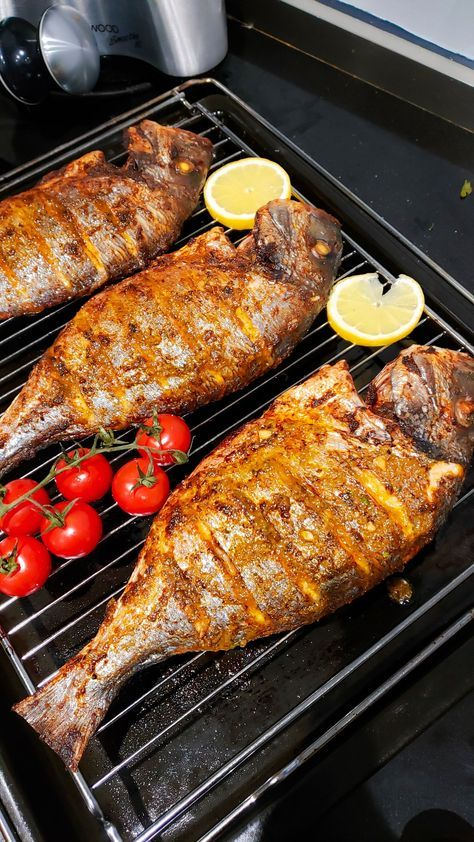

Fish

Fish is a healthy and delicious food that i like it
ingredients
- Fish fillets or steaks
- Salt and pepper
- Lemon juice or vinega
- Olive oil or butter
How to cook Fish?
- Rinse the fish fillets under cold water and pat them dry with a paper towel..
- Season the fish with salt, pepper, and any desired herbs or spices.
- Heat a small amount of oil or butter in a skillet over medium heat
- Place the fish fillets in the skillet and cook for 3-4 minutes on each side, or until the fish is opaque and flakes easily with a fork.
- Squeeze some lemon juice over the fish for added flavor.
- Serve the cooked fish with a side of vegetables, rice, or salad.